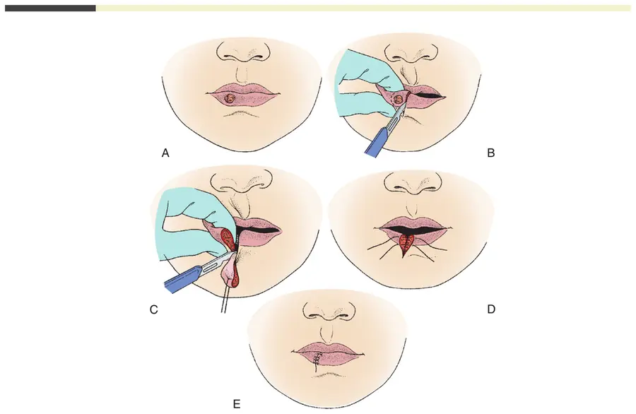
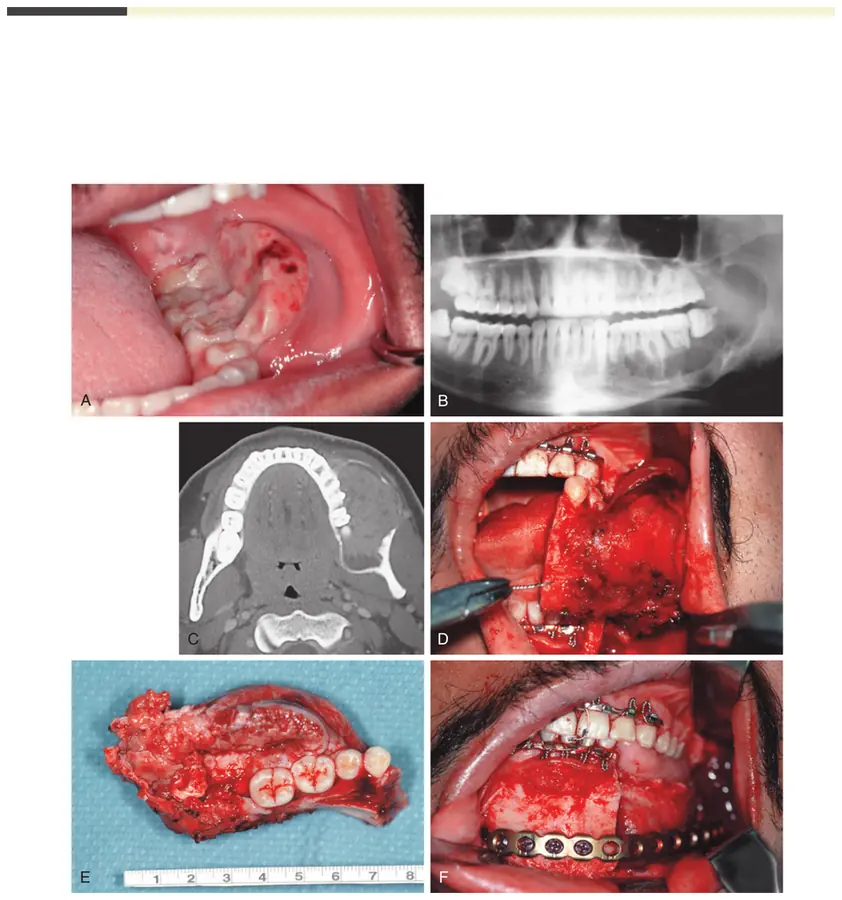

نسخه استخراجشده؛ ترجمه یا تأیید علمی انجام نشده است. وضعیت: captured
بدخیمیهای حفرهی دهان میتوانند از بافتهای گوناگونی برخیزند — غدهی بزاقی، عضله، رگ خونی — یا حتی بهصورت متاستاز از محلهای دوردست بروز کنند.

ولی شایعترین، کارسینوم اپیدرموئید مخاط دهان است — و یک نکتهی مهم: این همان شکلی از سرطان است که نخستین بار توسط دندانپزشک در معاینات کامل دهانی کشف میشود.
و طیف جدی بودن یک بدخیمی دهانی میتواند از این تا آن باشد: از نیاز به یک بیوپسی برداشتی ساده، تا رزکسیون کامپوزیت فک همراه با دیسکسیون گردن — یعنی برداشتن گرههای لنفاوی و سایر ساختارهای احشایی مجاور مجاری لنفاوی گردن — برای رسیدن به درمان.
و بهعلت همین تنوع در تظاهر بالینی، استیجینگ بالینی معمولاً پیش از تدوین طرح درمان انجام میشود.
تعریف و دو هدف استیجینگ: استیجینگ بالینی به ارزیابی گسترهی بیماری پیش از آغاز درمان اشاره دارد و دو هدف دارد:
و جزئیاتش: استیجینگ برای چند نوع بدخیمی دهانی از جمله کارسینومهای اپیدرموئید و لنفومهای دهانی انجام میشود. برای هر نوع بدخیمی متفاوت انجام میگیرد و میتواند آزمونهای تشخیصی گستردهای مانند رادیوگرافی، آزمایش خون، و حتی کاوش جراحی سایر نواحی بدن را برای ارزیابی گسترهی متاستاز احتمالی دربر بگیرد.
و پس از استیجینگ، طرح درمان تدوین میشود. افزون بر این، چند نوع بدخیمی پروتکلهای درمانی بهخوبی تعریفشدهای دارند که توسط جراحان و انکولوژیستها طراحی شدهاند تا اثربخشی رژیمهای درمانی با دقت بیشتری مطالعه شود.
بدخیمیهای حفرهی دهان با جراحی، پرتو، شیمیدرمانی، یا ترکیبی از اینها درمان میشوند.

و درمان هر مورد به هفت عامل بستگی دارد:
و سه قاعدهی کلی انتخاب:
و حالا «بورد تومور» — و جایگاهی که دندانپزشک در آن دارد: امروزه بدخیمیها اغلب در مؤسسهای درمان میشوند که چند متخصص هر مورد را ارزیابی و دربارهی رژیم درمانی بحث میکنند.
و به این فهرست دقت کن: دو نفر از اعضای افزوده دندانپزشکاند — و حضور متخصص تغذیه، آسیبشناس گفتار، و روانپزشک نشان میدهد که درمان بدخیمی دهان، تنها یک تصمیم جراحی نیست.